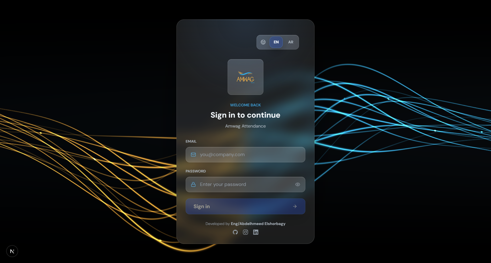
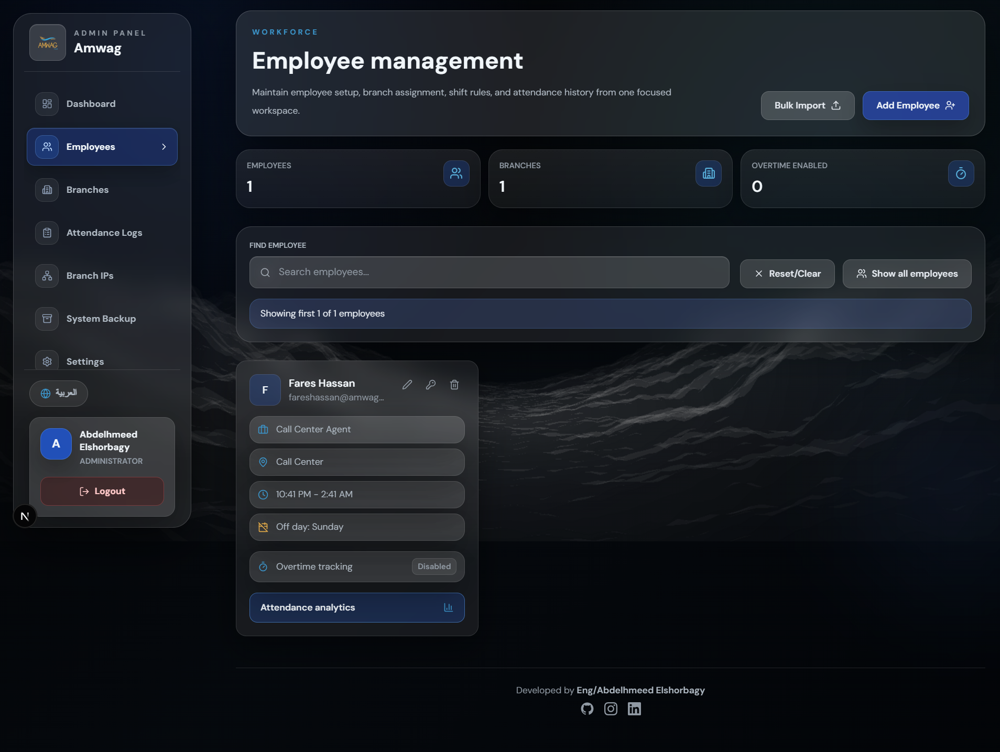
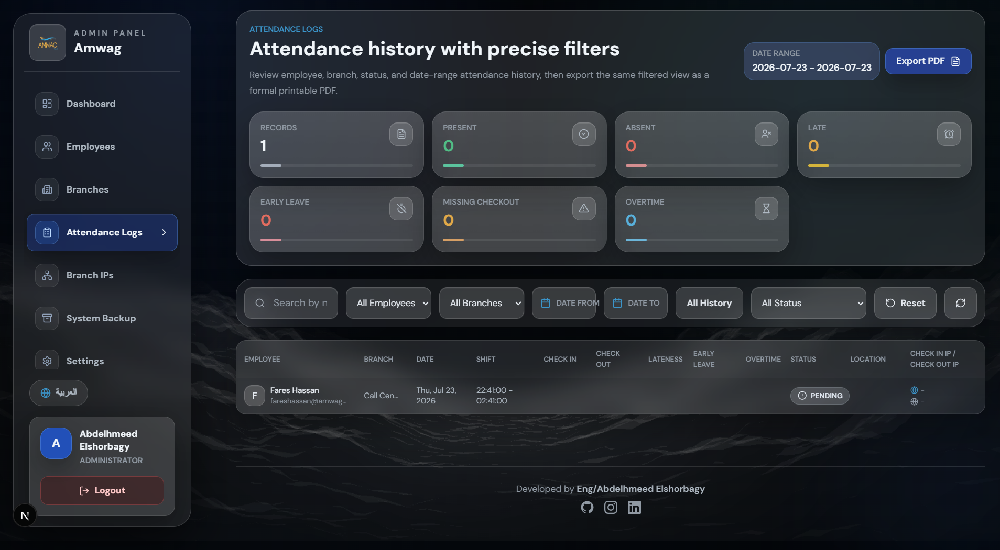
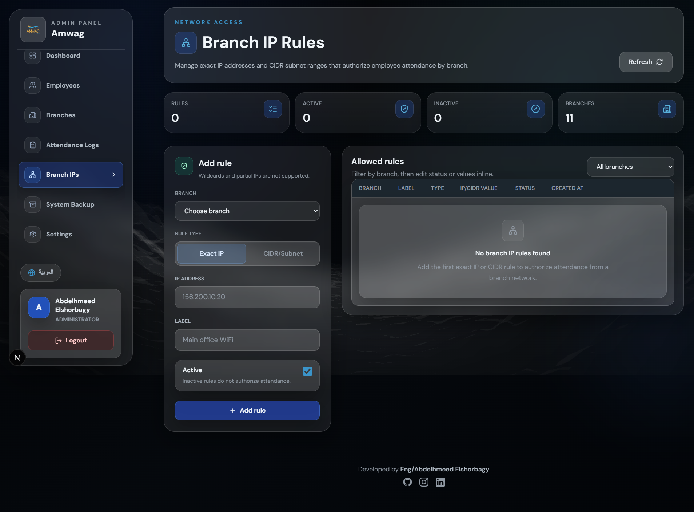
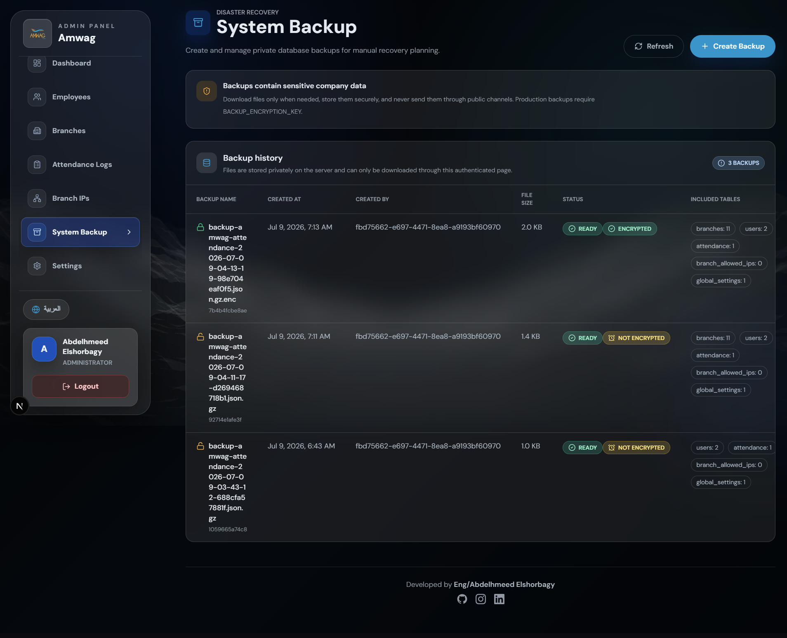

Selected work / Case study 02
Amwag Attendance — governance you can actually trust.
A production-grade bilingual attendance platform for a multi-branch company: branch and IP validation, role-based access, analytics, PDF reporting, and backup-and-restore workflows — engineered for the days when things go wrong.
Attendance sounds like a solved problem until it meets a real company: multiple branches, shifting schedules, employees and administrators with very different needs, and records that feed payroll and decisions. Off-the-shelf tools didn't fit the operation's rules — so the company needed its own system, and needed it to be dependable.
- Attendance records must be trustworthy — payroll and accountability depend on them.
- Check-ins must provably happen at the right branch, not from a phone at home.
- Administration needed visibility across branches without manual collation.
- Reports had to leave the system in a form managers actually use: PDF, in Arabic and English.
Two very different users share one system. An employee needs check-in to take seconds and to trust that their record is correct. An administrator needs to see anomalies quickly, manage exceptions fairly, and produce reports without exporting to spreadsheets and fixing them by hand.
If either experience fails, people route around the system — and the data stops being true.
- Full bilingual interface — Arabic and English across every screen and every generated document.
- Validation strict enough to prevent abuse, forgiving enough for legitimate edge cases (network changes, branch visits).
- Data loss is unacceptable: backups and restore had to be first-class features, not scripts on a server.
- Runs on pragmatic infrastructure — reliability through design, not through expensive platforms.
I designed and built the platform end to end: the data model and validation architecture, the employee and administration experiences, the reporting and backup subsystems, and the production deployment — plus ongoing product decisions as the operation's rules evolved.
The strategy: make the honest path the easy path. Check-in is near-instant when you're where you should be; every exception has a legitimate route through an administrator. Governance features were framed as protecting employees' records, not surveilling them — which is also simply what the system does.
Every record earns its trustworthiness before it exists.
The platform is really two products on one data model:
- Employee surface — check in/out, personal history, and request flows, optimised for speed on a phone.
- Administration surface — branch dashboards, anomaly review, employee management, report generation, and system settings including backups.
Role-based access control separates what each role can see and change, down to the action level — an administrator of one branch is not an administrator of all branches.
Internal tools deserve design too. The interface uses a calm dashboard language with clear status colors, dense-but-readable tables, and bilingual typography that keeps Arabic and English equally legible. Anomalies are surfaced, not buried: the admin home answers "what needs my attention today?" before anything else.
The platform in production





- Next.js + TypeScript end to end — one language, typed contracts between UI and API.
- Validation pipeline — identity, branch IP allow-lists, and shift rules evaluated server-side before any record is written.
- Reporting engine — parameterised queries feeding bilingual PDF exports for payroll periods and branch summaries.
- Backup & restore — scheduled database backups with an administrator-facing restore workflow, tested rather than assumed.
- Auditability — administrative changes to records are attributable, so exceptions stay accountable.
Strictness vs. reality. IP validation is a strong signal but not a perfect one — networks change, employees travel between branches. The trade-off: strict automatic validation with an explicit, logged administrative override, instead of loosening the rules for everyone.
Building restore, not just backup. Backups that have never been restored are a hope, not a plan. Building a real restore workflow took meaningful extra effort and was worth every hour.
Qualitative outcomes — no invented metrics:
In productionThe platform runs the company's real attendance operation across branches, in both languages.
Trustworthy recordsValidation at write time means reports are generated, not reconciled.
Operationally safeBackups, restore, and role-based access make the system dependable, not just functional.
Internal platforms live or die on trust. Users forgive a plain interface; they never forgive a wrong record. Investing early in validation, auditability, and restore workflows is what separates a tool people use from a tool people work around.